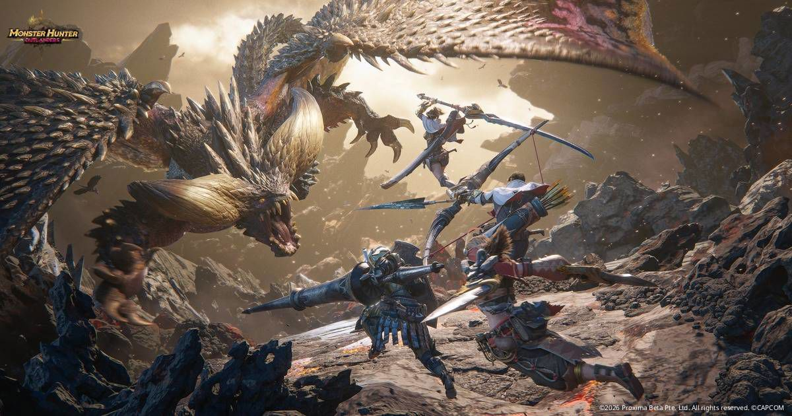

몬스터헌터 아웃랜더스 초반 무기 티어표 8종, 무기별 특징과 추천 무기는?
오늘 10월 29일이 몬스터헌터 아웃랜더스 글로벌 출시일이라, 첫 무기를 뭘로 잡을지 고민하는 분이 제일 많을 때인데요. 대검ㆍ롱소드ㆍ쌍검ㆍ해머ㆍ랜스ㆍ헤비보우건ㆍ활ㆍ차지블레이드, 출시 시점에 공개된 무기만 8종이라 하나 고르기가 만만치 않습니다.
가레나 보도자료에 따르면 이 게임은 캡콤 정식 라이선스로 TiMi Studio Group이 만들고 한국에는 가레나가 서비스하는 모바일 게임이에요. 버튼 하나로 파생 액션이 이어지는 조작이 특징이고, 최대 4명이 실시간으로 같이 사냥하는 구성이라 첫 무기 선택이 더 중요합니다.
그래서 오늘 갱신된 game8 티어표를 기준으로 S, A, B로 묶고, 무기마다 특징을 같이 적어 봤어요. 출시 첫날 초기 인상 티어라 보스 클리어 타임 같은 장기 데이터는 아직 없고, 평가도 주인공 캐릭터(Fated Adventurer) 기준이라 전용 모험가로 쓰면 달라질 수 있습니다.
제목의 '초반'은 출시 직후부터 초반 사냥까지를 가정한 범위고요. 무기 이름은 한국 표기가 아직 불확실해서 영문을 같이 적었습니다. 본가 시리즈에서는 롱소드를 태도, 차지블레이드를 차지액스라고 부르는 점도 참고해 주세요.

보시면 헌터마다 들고 있는 무기가 다 다른데요, 이 무기 8종을 오늘 정리합니다.
이미지 출처: 가레나 보도자료 · 디스이즈게임 게재 (©CAPCOM)
1. 초반 무기 티어표 한눈에 보기
game8 기준으로 S 티어는 롱소드ㆍ헤비보우건ㆍ차지블레이드, A 티어는 대검ㆍ활ㆍ쌍검, B 티어는 해머ㆍ랜스입니다.
평가 축은 피해량ㆍ범용성ㆍ편의성 세 가지예요. S는 준비를 많이 안 해도 꾸준히 강한 무기, A는 숙련도와 준비가 받쳐 주면 S와 겨룰 만한 무기, B는 쓸 수 있는 기술이 제한적이거나 느리고 피해가 낮아서 최적화가 어려운 무기로 나눴습니다.
| 티어 | 무기 | 한 줄 성격 |
|---|---|---|
| S | 롱소드 (Long Sword) | 공격적이고 기동성이 좋은 대신 가드가 없음 |
| S | 헤비보우건 (Heavy Bowgun) | 원거리라 안전하고 범용성이 높음 |
| S | 차지블레이드 (Charge Blade) | 피해ㆍ범용 만점, 대신 익히기 어려움 |
| A | 대검 (Great Sword) | 차지 한 방이 강하지만 느림 |
| A | 활 (Bow) | 기동성이 좋고 약점ㆍ속성 지식이 필요 |
| A | 쌍검 (Dual Blades) | 빠르지만 한 대가 약하고 가드 불가 |
| B | 해머 (Hammer) | 유일하게 기절을 줄 수 있지만 매우 느림 |
| B | 랜스 (Lance) | 느리고 까다롭지만 공격과 방어를 동시에 |
표의 한 줄 성격은 game8 평가를 바탕으로 적었고, Pocket Tactics 무기 소개와도 방향이 같았어요. 해머와 차지블레이드는 game8 설명만 참고했습니다.
2. S 티어 3종, 롱소드ㆍ헤비보우건ㆍ차지블레이드
S 티어는 롱소드ㆍ헤비보우건ㆍ차지블레이드 3종이고, 이 중 점수 합계가 제일 높은 건 롱소드입니다. 아래 표에는 8종 점수를 전부 넣었어요.
| 무기 | 피해 | 범용 | 편의 | 합계 |
|---|---|---|---|---|
| 롱소드 | 5 | 4 | 5 | 14 |
| 헤비보우건 | 3 | 5 | 5 | 13 |
| 차지블레이드 | 5 | 5 | 3 | 13 |
| 대검 | 5 | 3 | 4 | 12 |
| 활 | 4 | 4 | 4 | 12 |
| 쌍검 | 4 | 3 | 4 | 11 |
| 해머 | 4 | 4 | 3 | 11 |
| 랜스 | 3 | 4 | 4 | 11 |
점수는 game8 수치이고, 합계는 점수를 더한 값입니다.
롱소드, 피해와 편의가 둘 다 5
롱소드(Long Sword)는 공격적이고 기동성이 좋은 근접 무기입니다. 가드가 없어서 회피 타이밍을 직접 읽어야 하는데요, 카운터를 성공시키면 Spirit Gauge가 차는 구조고 game8은 Foresight Slash의 패링 판정이 관대한 편이라고 봤어요.
무브셋이 단순해서 편의 점수가 5까지 나왔고, 피해와 편의가 둘 다 5인 건 롱소드뿐이에요. 편하기만 한 게 아니라 화력도 만점이라는 게 포인트입니다. 전용 모험가는 Midori예요.
이 화면처럼 장비 화면에서 무기 상세를 열어 두면 비교하기 편해요.
헤비보우건, 안전하게 쏘는 쪽
헤비보우건(Heavy Bowgun)은 범용 5ㆍ편의 5로 원거리에서 안전하게 싸우는 무기입니다. 시리즈 전통으로는 최고 화력 무기 이미지가 있는데 game8의 피해 점수는 3이고, 베타 너프가 반영됐다는 언급도 붙어 있어요.
운용 포인트는 시스템 이름에 다 들어 있는데요, 특수탄과 Wyvernheart, 재장전과 이어지는 Perfect Guard, 회피 판정인 Perfect Evade가 핵심 시스템입니다. Pepper가 전용 모험가입니다.
차지블레이드, 만점 둘에 학습 곡선
차지블레이드(Charge Blade)는 피해와 범용이 둘 다 5점 만점인데 편의가 3이라 S 중에서 가장 손이 많이 가는 쪽이에요. 출시 전 가이드에는 디자인조차 공개되지 않았던 무기라 자료가 아직 적습니다. game8은 Axe Mode의 상한이 높고 학습 곡선이 가파르다고 봤어요. 초반에 편하게 쓸 무기라기보다 익숙해진 다음 도전할 무기에 가깝겠죠.
세 무기를 한 줄로 줄이면 편하게 쓸 롱소드, 안전하게 쓸 헤비보우건, 숙련 뒤에 노릴 차지블레이드입니다.
3. A 티어 3종, 대검ㆍ활ㆍ쌍검
A 티어는 대검ㆍ활ㆍ쌍검이고, 손에 익고 준비가 갖춰지면 S 티어와도 겨룰 수 있다는 평가입니다.
- 대검(Great Sword) : 차지를 모아 때리면 막대한 피해가 나오지만 움직임이 느려요. 전용 모험가는 가이드마다 말이 달라서(Pocket Tactics는 없다고, BlueStacks는 Pyro를 든다고 합니다) 아직 확실하지 않아요.
- 활(Bow) : 기동성이 좋은 대신 약점과 속성을 알아야 제 화력이 나옵니다. Luka와 Madelyn이 전용 모험가로 꼽힙니다.
- 쌍검(Dual Blades) : 속도는 빠르지만 한 대 한 대가 약하고 가드가 안 돼요. 속성ㆍ상태이상에 강하고, Demon Mode와 Archdemon Mode를 Demon Gauge로 굴립니다. 전용 모험가는 Keres와 라야(Raya)예요.
A 티어는 준비할 거리가 분명한 편이에요. 활은 약점과 속성, 쌍검은 속성과 상태이상, 대검은 차지 타이밍을 챙기는 게 곧 점수가 되는 무기들입니다.
4. B 티어 2종, 해머ㆍ랜스
B 티어는 해머와 랜스인데, 낮다고 못 쓰는 무기는 아니고 최적화 난도가 높다는 뜻으로 읽으시면 됩니다.
해머(Hammer)는 game8 설명으로 현재 유일하게 기절을 줄 수 있는 무기인데, 공격이 매우 느리고 차지 공격은 맞으면 초기화돼서 주로 머리를 노려 씁니다. 공개된 모험가 중에는 전용 사용자가 없어서 BlueStacks 가이드는 주인공으로 직접 체험해 보라고 권해요. 랜스(Lance)는 느리고 까다롭지만 공격과 방어를 같이 하는 무기고, Spiral Thrust와 대시 공격이 눈에 띄어요. 전용 모험가는 Ouyang Varen과 Arkaya예요.
5. 그래서 가장 추천하는 무기는?
가장 추천하는 무기는 롱소드이고, 원거리가 편하신 분께는 헤비보우건을 대안으로 권합니다.
- 근접으로 붙어서 싸우고 싶다면 롱소드 : 점수 합계 14로 S 중 최고고 편의가 5라서, 회피 타이밍만 익히면 곧바로 숙련으로 이어집니다.
- 거리를 두고 안전하게 싸우고 싶다면 헤비보우건 : 범용ㆍ편의가 5라 부담이 적고, 대신 피해가 3이라 화력은 기대를 낮추세요.
- 차지블레이드는 후순위 : 편의 3이라 처음 잡기엔 무겁고, 숙련 뒤 도전하는 쪽이 맞아요.
실수 여유부터 따지신다면 참고할 점이 있어요. BlueStacks 가이드는 티어를 매기지 않고 실수 여유가 큰 랜스ㆍ활ㆍ헤비보우건을 초심자용으로 꼽는데, 이 중 game8에서도 S 티어인 건 헤비보우건뿐입니다.
주인장이라면 일단 롱소드로 시작해서 회피부터 손에 익히겠습니다. BlueStacks 가이드 말대로 정답 무기는 없고, 모험가 모집 재화를 쓰기 전에 주인공으로 무기를 바꿔 체험해 보라고 하니 마음에 걸리는 무기는 한 번씩 만져 보시길 권해요. 출시 직후 패치나 실측이 쌓이면 티어가 움직일 수 있어서, 변동이 생기면 이 글도 같이 고치겠습니다.
지금 보시는 화면처럼 무기를 바꿔 가며 손맛을 먼저 확인해 보세요.
참고한 곳
· game8 몬스터헌터 아웃랜더스 티어표 (2026.10.29 기준)
· Pocket Tactics 몬스터헌터 아웃랜더스 무기 소개
· BlueStacks 몬스터헌터 아웃랜더스 무기 가이드
· 가레나 한국 출시 확정 보도자료(디스이즈게임 게재)